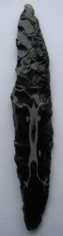

Mesolithic figure from the former Yugoslavia 20,000 –
9,000 BP Real Time Date – 15,600. BP. This one taught me an incredible
amount regarding the Jinn. The Jinn have been with humanity from the
beginning. They are a very powerful source to acknowledge but in our modern
world this subject is in its infancy.
This Pinto Basin point came to me in a dream were I was standing in complete
blackness with this point hovering in front of me. I found the exact point
that week on E- Bay. It has become my main connection to the North American
past.
This Angostura point introduced the knowledge that females in the Paleo
times were also involved in some hunting and tool manufacturing.
This Cache Blade is the Translator between me and all the others. The turned
down mouth of this beautiful individual is very common among the ancient
shamans. I found direct connection to them also had this effect on me at the
time.
Page 12 - Second Part
Inside every artifact is a consciousness that can
speak to those that want to listen.
Below are some of the members of the Council of Stone.
This council grew over a two year period to number in the hundreds. Each has its own
strengths and its own understandings. Each member is a crucial part of the whole
and all are equal in stature and rank in this council of time. The ones shown
below are a small sample of artifact diversity. They also give an indication of
the varieties of knowledge and powers that can be gleamed using this method. (Picture
above is a green obsidian point from
Venezuela)
This Motley point was my introduction into the five main "families" that
migrated to North America. the five "families" (race types) as they
call them are spiritual DNA families and their decedents can be followed
across the continent. more will be said on this topic. The picture
inside the point is of Poverty Point and its significance in the story is
great for one of the Eastern families.
This Mayan point was the introduction to new technologies that can be
adapted to this modern culture.

This Redstone point is the oldest Eastern family I have contact with. Its
true date (not scientific) is 13,300 years B.P. They were a mix of the North
American Originals and the Solutrean 2 people.
This Kennewick point is my second oldest Western family member at 13,400
years B.P. There were two main western families that did not get along with
each other, with origins back to pre migration times. The other family was from the
Dyuktai/Cascade family.
This Jasper Silver Lake point is my oldest western point and my
spiritual genetic beginning on this continent. It dates in true time at
20,000 years B.P.
This Oxbow projectile point has the ability to
co-create with others in the process of death. Because of its
physical experience it is a great protector type.
Northern Side Notched - base - A very powerful healer.
Tools Page 2